É o conjunto de glândulas envolvidas na produção de secreções, que são os hormônios.
Os hormônios são substâncias químicas produzidas por um grupo de células, em uma parte do corpo que, quando secretadas no sangue, controlam outras células e suas funções.
Os órgãos que têm sua função controlada e/ou regulada pelos hormônios são chamados órgãos-alvo.
A secreção, ao cair diretamente na corrente sanguínea é denominada secreção endócrina.
As secreções liberadas em ductos, são denominadas exócrinas.
As glândulas responsáveis pela secreção dos hormônios, portanto, são classificadas como glândulas endócrinas e exócrinas.
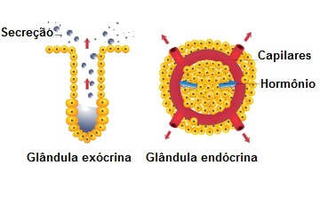
Tipos de hormônios
Os hormônios podem ser de dois tipos quanto à sua natureza química: proteicos e esteroides.
Os hormônios proteicos (hidrossolúveis) são formados a partir de aminoácidos, geralmente constituídos por pequenas proteínas.
Já os hormônios esteroides (lipossolúveis) são sintetizados a partir do colesterol.
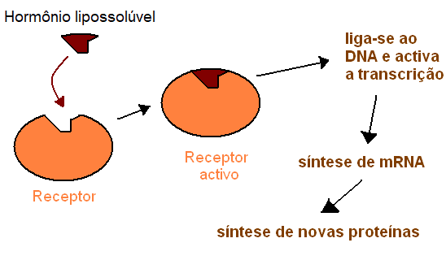
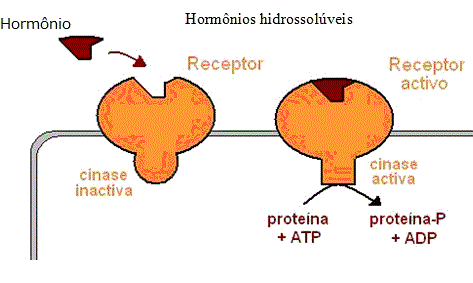
Os hormônios proteicos se ligam aos chamados receptores de membrana, que são proteínas inseridas na membrana plasmática da célula.
Quando ocorre a ligação da substância no referido receptor, os mensageiros secundários (proteínas e íons citoplasmáticos como o AMP-cíclico intracelular) enviam mensagens para o núcleo para que aí se realize a efetiva resposta celular.
Já os hormônios esteroides, de constituição lipídica, penetram na célula pela membrana plasmática (sem precisar de receptores na membrana), chegando até o núcleo, em que se ligam a receptores nucleares, exercendo seus efeitos celulares com ativação de genes.
Com a ativação de determinados genes, o RNA mensageiro se desloca para o citoplasma da célula e determina a síntese de proteínas.
Os diferentes sistemas do organismo funcionam harmonicamente, sendo que o sistema endócrino interage com o sistema nervoso, realizando diferentes mecanismos reguladores essenciais para o funcionamento orgânico.
O sistema nervoso pode fornecer ao sistema endócrino diversas informações, estímulos que vêm do ambiente externo, enquanto que o sistema endócrino regula as respostas internas do organismo a esta informação.
Dessa forma, o sistema endócrino, em conjunto com o sistema nervoso, trabalha coordenando e regulando as diversas funções corporais.
Principais Glândulas do Sistema Endócrino
Os principais órgãos que constituem o sistema endócrino são:
Hipotálamo;
Glândula Hipófise;
Glândula tireóide;
Glândulas supra-renais;
Pâncreas;
E as gônadas (os ovários e os testículos).
Hipotálamo
Sintetiza e secreta hormônios que controlam a secreção dos hormônios da adeno-hipófise (glândula pituitária anterior).
Esses hormônios são transportados para a adeno-hipófise por um sistema portal que forma uma ligação vascular direta entre o hipotálamo e a adeno-hipófise conhecido como sistema porta hipotalâmico-hipofisário.
O hipotálamo controla a secreção da adrenalina e da noradrenalina pela medula supra-renal por via das fibras nervosas que atravessam a medula espinhal.

Então, o hipotálamo exerce controle nervoso direto sobre as secreções da neuro-hipófise e medula supra-renal, e via vasos sanguíneos portais, controle hormonal sobre as secreções da adeno-hipófise.
Esta glândula realiza controle neural da neuro-hipófise e da medula supra-renal através de dois hormônios que produz: ADH ou vasopressina e ocitocina.
Hipófise
É uma massa de tecido com cerca de 1 cm de diâmetro, pesando aproximadamente 0,8 g, no adulto.
Consiste em duas divisões básicas:
A adeno-hipófise (gandula hipófise anterior);
E a neuro-hipófise (glândula hipófise posterior).
Neuro-hipófise - (Glândula Hipófise Posterior)
Não produz hormônio, mas funciona no armazenamento de dois hormônios nas terminações nervosas dos neurônios, cujos corpos celulares estão localizados nos núcleos supra-óptico e paraventricular do hipotálamo.
Os dois hormônios, ocitocina e ADH, descritos acima, são sintetizados e armazenados nos grânulos de secreção nos corpos celulares neuronais e transportados pelos axônios para as terminações nervosas.
A liberação dos hormônios dos grânulos de secreção nas terminações nervosas é controlada pelos impulsos nervosos dos núcleos hipotalâmicos.
ADH ou vasopressina
Hormônio antidiurético, que reduz o volume e aumenta a concentração de urina pelo aumento da permeabilidade dos túbulos coletores e túbulos contorcidos distais dos rins para a água, por isso permite que maiores quantidades de água sejam reabsorvidas pelos túbulos para a corrente sanguínea ; além disso, quando presente em altas concentrações, provoca constrição dos vasos sanguíneos em todo o corpo e eleva a pressão arterial.
Essas ações são mediadas pela concentração osmótica sanguínea e os receptores nervosos no hipotálamo.

Ocitocina
Estimula as contrações musculares do útero durante o parto, ajudando expelir o recém-nascido, e contraem também as células miopiteliais da mama, expulsando o leite, quando o lactente suga.
Estas ações são mediadas através do estímulo nervoso (SNC).
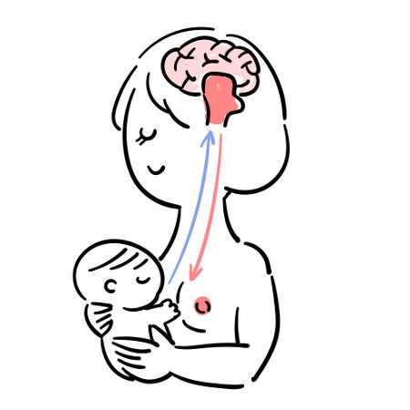
Adeno-hipófise - (Glândula Hipófise Anterior)
Os principais hormônios da adeno-hipófise, com a exceção do hormônio de crescimeto (GH), controlam as atividades de glândulas-alvo específicas:
Tireóide, córtex supra-renal, ovário, testículo, e glândula mamária.
Todos os hormônios da adeno-hipófise são proteínas.
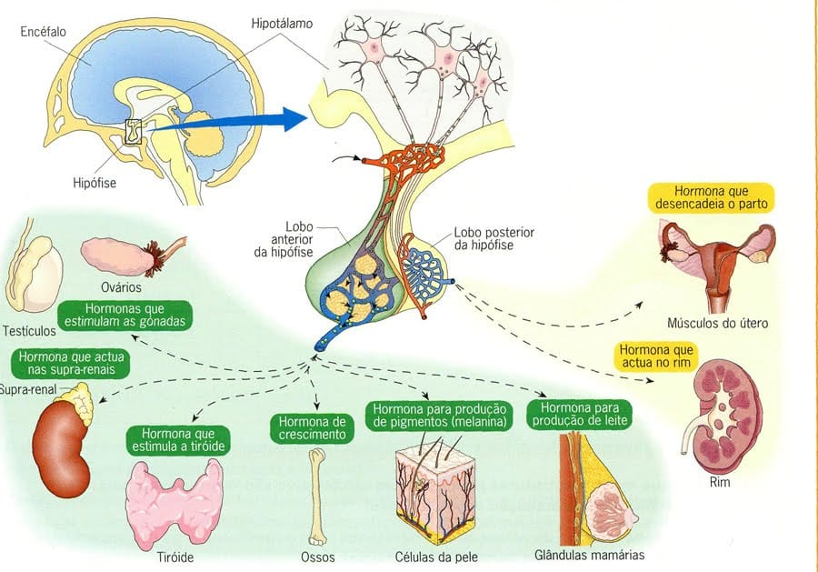
Hormônio Estimulante da Tireóide (TSH)
Também chamado de tireotropina, regula o tamanho e a função da glândula tireóide, promovendo o crescimento tecidual e a produção e secreção dos hormônios da tireóide:
T4 (tetraiodotironina), também chamada de Tiroxina.
E o hormônio T3 (triiodotironina).
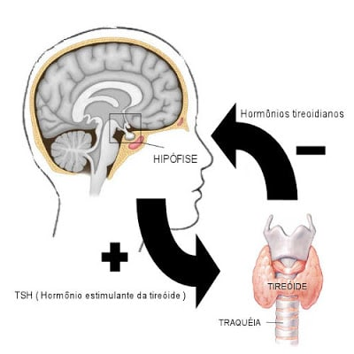
Hormônio Adrenocorticotrópico (ACTH)
Também chamado de adrenocorticotropina, regula o crescimento e a função das zonas médias (zona fasciculada) interna (zona reticular) do córtex da supra renal, as regiões que sintetizam e secretam cortisol e os hormônios esteróides similares (e pequenas quantidades de androgênios).
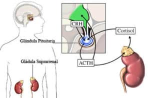
Hormônio de Crescimento (GH) ou Somatotropina
Acelera o crescimento, aumentando o tamanho de todos os órgãos e promove o crescimento ósseo antes do fechamento das epífises, pois eleva a síntese proteíca, a taxa de açúcar e o transporte de ácidos graxos de reservas de gordura.
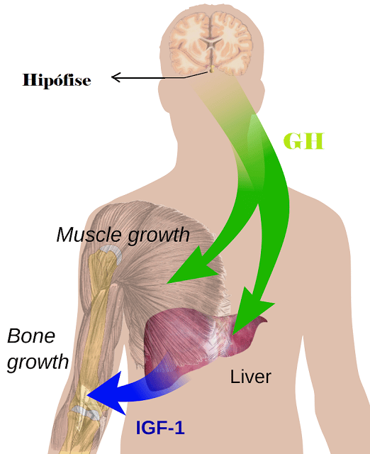
Hormônio Prolactina
Promove o desenvolvimento das mamas e estimula a síntese de leite, em conjunção com outros hormônios, inclusive insulina e cortisol.
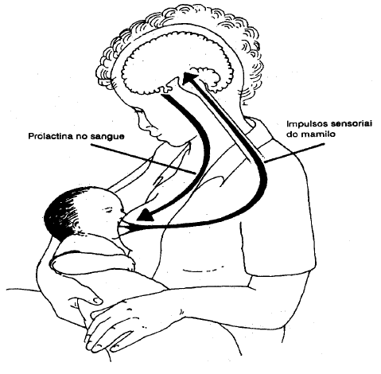
Hormônios Gonadotrópicos (GNRH)
Existem dois tipos de hormônios desta natureza:
O hormônio folículo-estimulante (FSH), que estimula o crescimento do folículo ovariano antes da ovulação para as mulheres, e promove a formação de espermatozóides nos testículos (espermatogênese);
E o hormônio luteinizante (LH), também chamado de hormônio estimulante da célula intersticial (ICSH) no homem, controlando a produção testicular da testosterona.
Na mulher o LH atua sinergicamente com o FSH para promover a maturação do folículo ovariano, desencadeando a ovulação.
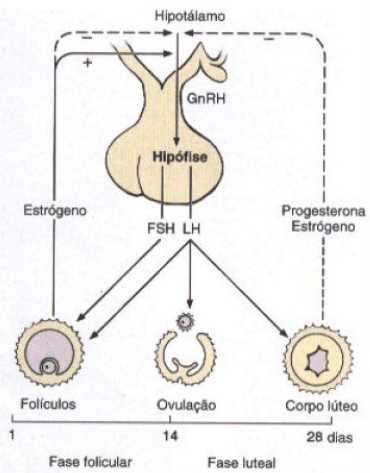
Glândula Tireóide
A tireóide humana é composta de dois lobos que se dispõem de cada lado da traquéia e são conectados na linha média por um delgado istmo, que se estende sobre a superfície anterior da traquéia.
No adulto, a tireóide pesa de 20 a 30 g.
É encapsulada por duas camadas do tecido conjuntivo – a externa, contínua com a fáscia cervical, e a interna, intimamente aderente à superfície da própria glândula.
Produz três importantes hormônios: tireoxina ou tetraiodotironina (T4, por causa dos quatro átomos de iodo conectados ao núcleo de tireonina), triiodotireonina (T3, por causa dos três átomos de iodo) e Calcitonina.
Os hormônios produzidos pela tireóide promovem o crescimento e a diferenciação, e aumentam o metabolismo oxidativo; são necessários para o desenvolvimento normal do sistema nervoso central e aumentam o catabolismo do colesterol.
Já a calcitonina promove a deposição de cálcio nos ossos, diminuindo assim, a concentração de cálcio no líquido extracelular.
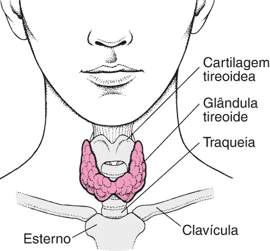
Glândula Paratireóide
São quatro glândulas que ficam no pescoço, atrás da tireoide, cuja função é controlar os níveis de cálcio no sangue através da produção do hormônio paratireoideano ou paratormônio (PTH).
Quando há produção excessiva de PTH, os níveis de cálcio no sangue sobem, numa condição chamada hipercalcemia.
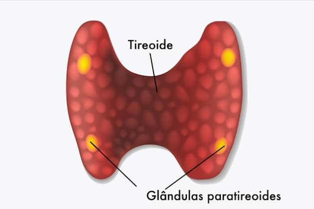
Glândulas Suprarrenais
Há duas glândulas supra-renais, localizadas superiormente com relação a cada rim.
Varia de peso nos diferentes grupos etários, sendo a média no adulto cerca de 4 g.
Cada glândula supra-renal possui um córtex, ou porção externa, e uma medula, ou porção interna.
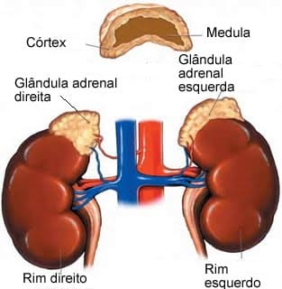
Córtex da supra-renal
Secreta três tipos gerais de substâncias:
Mineralocorticóides: representado principalmente pela Aldosterona;
Glicocorticóides: representados principalmente pelo Cortisol (hidrocortisona);
E hormônios sexuais (Andrógenos de baixa potência e pouquíssima quantidade de estrogênios).
A Aldosterona reduz a excreção de sódio pelos rins e aumenta a excreção de potássio.
Exerce também funções extrarrenais do metabolismo eletrolítico, diminuindo a concentração do sódio e aumentando a do potássio na saliva e no suor.
O Cortisol influencia no metabolismo da glicose, das proteínas e dos lipídios.
Já os Andrógenos produzem a masculinização, sendo o mais importante a Testosterona, que é secretada pelos testículos.
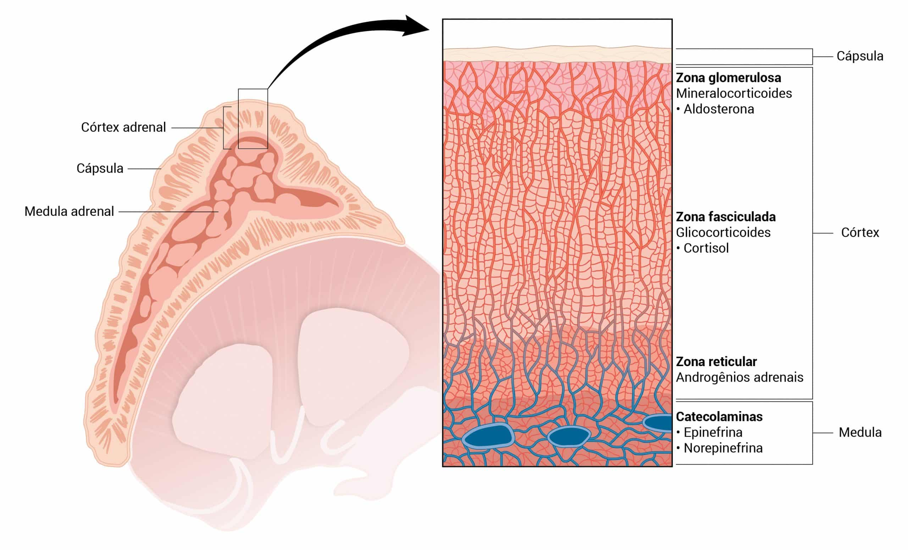
Medula da supra-renal
Enquanto que os hormônios do córtex são esteróides, os da medula, adrenalina e noradrenalina, pertencem a uma classe de compostos catecolaminas.
Esses hormônios são liberados por estimulação das terminações nervosas pré-glanglionares, com efeitos principais cardiovascular e metabólico.
O efeito completo dos dois hormônios sobre o sistema cardiovascular é aumentar a frequência cardíaca e a força de contração ventricular, constrição arteriolar na pele e região abdominal, e dilatação arteriolar no músculo esquelético.
A noradrenalina atua principalmente como um vasoconstritor; a adrenalina é mais potente como estimulador cardíaco.
Os efeitos metabólicos dos hormônios incluem a estimulação da quebra do glicogênio no fígado e no músculo esquelético e a gliconeogênese no fígado (ações principalmente da adrenalina), e a mobilização dos ácidos graxos de seus depósitos.
Ilhotas Pancreáticas
As ilhotas pancreáticas de Langerhans, constituindo cerca de 2% do tecido glandular, estão distribuídas por todo o pâncreas.
Elas produzem dois hormônios proteicos: a insulina e o glucagon.
A insulina promove a entrada de glicose na maioria das células do corpo, controlando, o metabolismo da maioria dos carboidratos.
Além disso, aumenta a reserva e diminui a mobilização e oxidação de ácidos graxos, bem como aumenta a formação de proteína.
O glucagon aumenta a liberação hepática de glicose nos líquidos corporais circulantes, a gliconeogênese e a glicogenólise no fígado e a lipólise no tecido adiposo.
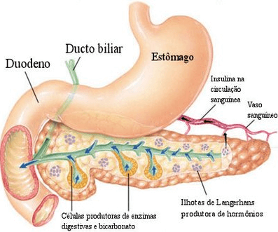
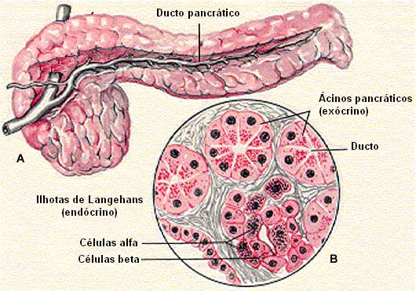
Ovários
Os ovários são duas pequenas glândulas localizadas na porção pélvica do abdome feminino e conectadas ao ligamento largo.
A camada externa do ovário consiste em um epitélio especializado que produz os óvulos.
Dois tipos de hormônio são secretados pelos ovários:
O estrogênio e a progesterona.
O estrogênio estimula o desenvolvimento dos órgãos genitais femininos, das mamas e das características sexuais secundárias.
Contudo, a progesterona estimula a secreção de “leite uterino” pelas glândulas endometriais do útero, além de promover o desenvolvimento do aparelho secretor das mamas.
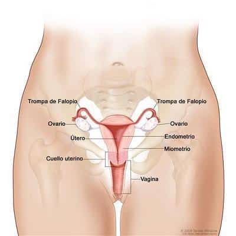
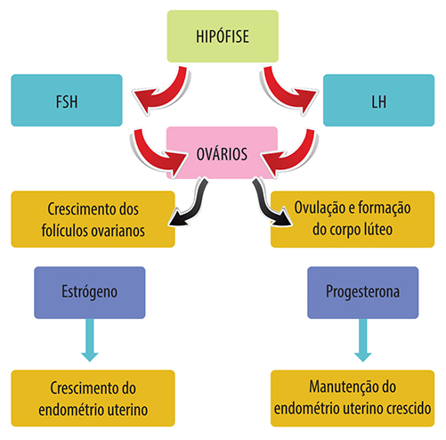
Testículos
Os testículos são pequenas glândulas ovóides suspensas na região inguinal pelo funículo espermático, circundadas e suportadas pelo escroto.
Dois tipos celulares especializados são encontrados na substância testicular:
Células de Sertoli;
E as células de Leydig.
As células de Sertoli são elementos essenciais para a realização das funções testiculares.
São secretoras e produzem o fluido tubular que está presente no túbulo seminífero, o que permite que os espermatozóides se encontrem em suspensão e se movimentem.
As células de Leydig estão localizadas no tecido do testículo que rodeia os tubos seminíferos e são responsáveis pela secreção de testosterona e de outros androgénios.
Estas células também são responsáveis pela libertação do FSH que, juntamente com a testosterona, estimulam a espermatogênese.
As células de Leydig estão localizadas nas extremidades dos túbulos seminíferos. Estas células são responsáveis pelo desenvolvimento das células germinativas (espermatozóides) já que são produzem e secretam uma grande quantidade de proteínas importantes que desempenham um papel importante na espermatogênese.
Além disso, elas também têm a importante tarefa de eliminar e fagocitar a sespermátides na espermatogênese.
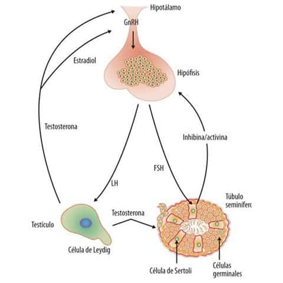
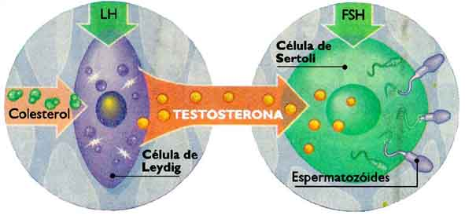
Glândula Pineal
A glândula pineal humana é um órgão pequeno e cônico, de cor cinza, que se localiza aproximadamente no centro do encéfalo.
Esta glândula possui menos de 1 cm no seu diâmetro maior e pesa aproximadamente 0,1 a 0,2 g.
Sintetiza melatonina, um hormônio que exerce efeitos inibidores sobre as gônadas.
Quando sua função é reduzida causa a puberdade precoce.
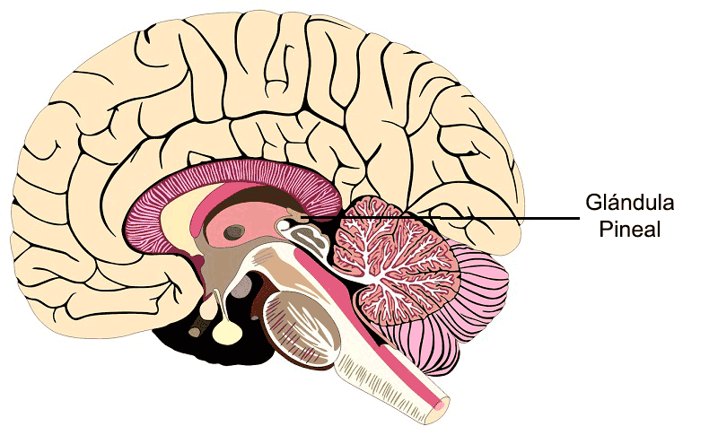
Placenta
Órgão endócrino que secreta:
Gonadotropina coriônica humana (HCG),
Estrogênio,
progesterona,
e lactogênio.
A gonadotropina coriônica humana (HCG) promove o crescimento e manutenção do corpo lúteo do ovário intacto e secreta estrogênio e progesterona que, se suspenso, causaria a interrupção da gravidez como resultado da perda de suporte do endométrio uterino.
O Hormônio Lactogênio Placentário (HLP) que “bloqueia” a ação da insulina, fazendo com que o pâncreas tenha que aumentar a secreção de insulina.
A secreção placentária de progesterona e estrogênio aumenta durante a progressão da gestação, alcançando o pico máximo pouco antes do nascimento.
Esses hormônios são muito importantes na promoção do desenvolvimento fetal.
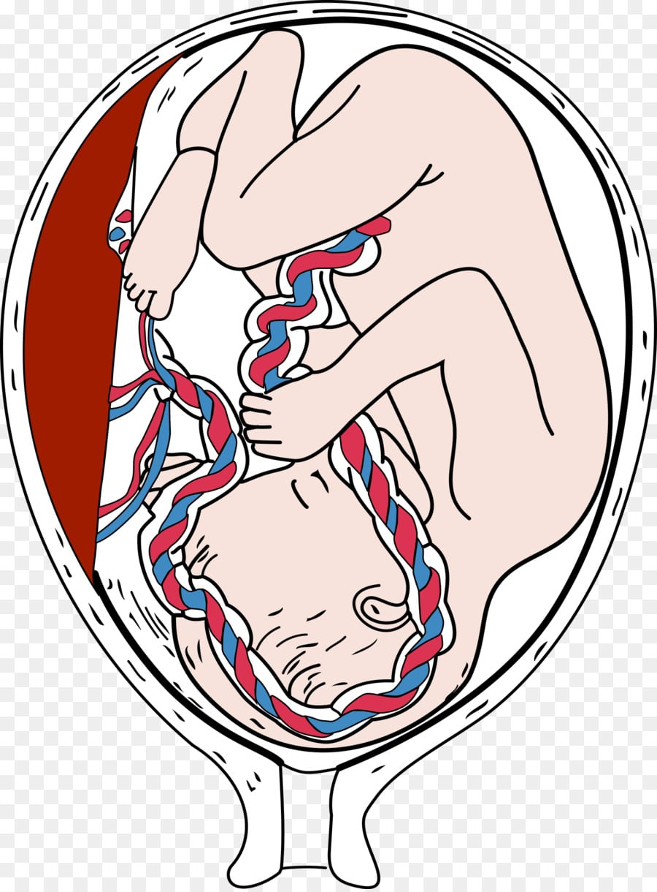